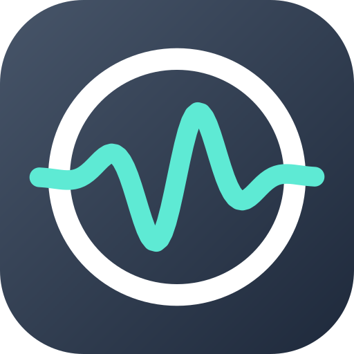
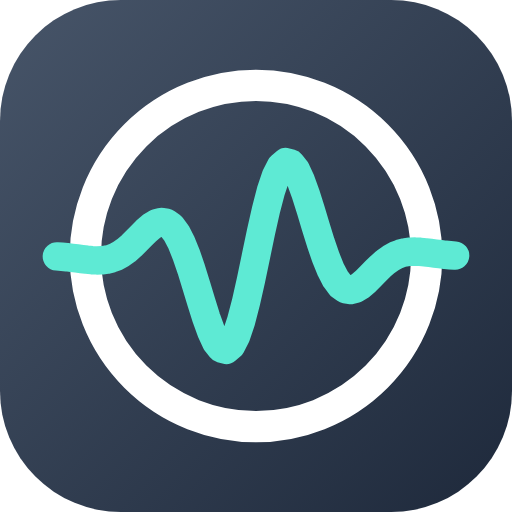

Google 助理換成 Gemini 之後，連「設鬧鐘」「開手電筒」這種小事，也要經過大型 AI 模型處理。
我只需要簡單的動作，不需要呼叫這麼高階的模型。所以聲得我心把常用指令都放在手機上直接判斷：說完就做，不用等雲端、不用登入，也不用付 AI 的錢。
真的遇到聽不懂的句子，才可以選擇交給你自己的 AI 金鑰，而且預設用最小、最快的模型。

聲得我心
Google 助理換成 Gemini 之後，連「設鬧鐘」「開手電筒」這種小事，也要經過大型 AI 模型處理。
我只需要簡單的動作，不需要呼叫這麼高階的模型。所以聲得我心把常用指令都放在手機上直接判斷：說完就做，不用等雲端、不用登入，也不用付 AI 的錢。
真的遇到聽不懂的句子，才可以選擇交給你自己的 AI 金鑰，而且預設用最小、最快的模型。
都不用一直開著麥克風，不會額外耗電。
系統設定把「按住電源鍵」改成數位助理。
Pixel 的「快速輕觸」，動作選數位助理。
一顆麥克風按鈕，點一下就開始聽。
Android 16 QPR2 起的 Pixel 手機可以放在鎖定畫面。
下拉通知列點一下；也能長按圖示選「說話」。
藍牙耳機或方向盤的語音鍵（要裝置有支援）。
下面這些都在手機上直接判斷，不需要 AI；除了查天氣，也不用網路。
名字相近的人會列出來讓你選，不會打錯人。
規則聽不懂的句子、一般問答，可以交給你自己的 Claude、DeepSeek 或 OpenAI 金鑰，大約 1 秒回應。不填也能用上面全部的功能。
自己設定觸發語句和要做的事，「要做的事」用平常說話的方式一行寫一句。還能設定助理怎麼稱呼你。
手機裡專門聽喚醒詞的低耗電晶片只開放給系統內建的助理。第三方 App 要喊名字，就得一直開著麥克風和處理器，很耗電，狀態列也會一直亮著麥克風圖示。所以改用長按電源鍵、背面點兩下、小工具這些不耗電的叫法。
不用。鬧鐘、計時、音量、靜音、手電筒、亮度、勿擾、音樂、開 App、導航、打電話、天氣和情境，都在手機上直接判斷。
填了金鑰，只有規則聽不懂的句子才會送出去，費用由你選的 AI 服務計算；預設用最小、最便宜的模型，每句的費用很低。
長按電源鍵在鎖定畫面也叫得出來。要打開其他 App 的指令（例如導航、開 App）會先請你解鎖，這是 Android 的安全規定。
語音辨識由手機上的 Google 語音服務處理。聲得我心自己不收集任何資料、沒有使用統計。
會送出去的只有兩種：填了 AI 金鑰時，規則聽不懂的那一句話送給你選的 AI 服務；查天氣時，大概位置送給 Open-Meteo 天氣服務。AI 金鑰只存在手機，不備份、不轉移。
Android 12 以上、有 Google 語音服務的手機。在 Pixel 7 Pro（Android 17）上開發與測試；背面點兩下和鎖定畫面小工具是 Pixel 的功能，其他品牌的手機看各自的設定。